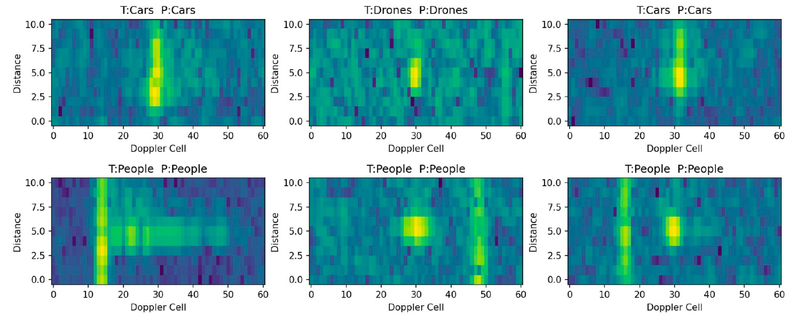
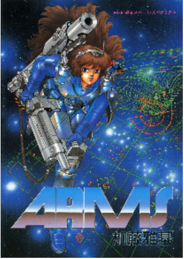

Selected hands-on projects and experiments, mostly around reinforcement learning, neural fields, radar, and image restoration.

PPO-MAML for Meta-World Assembly-v3
Reinforcement Learning · Meta RL · Robotic Manipulation
A compact PyTorch implementation that combines Model-Agnostic Meta-Learning (MAML) with a PPO inner loop
on the Meta-World ML1 assembly-v3 benchmark. The goal is fast policy adaptation for a
robotic arm assembling a peg and socket under task variations.
- Single ~200-line script with fixed seeds, CSV logging, and GIF rollout for visualizing adaptation.
- “Simple but solid” ingredients: reward normalisation, entropy regularisation, gradient clipping.
- Runs on CPU (MacBook Pro M2) and can be ported to GPU for larger sweeps.
Code and details:
GitHub repository

Seismic NeRF-inspired Subsurface Imaging
Neural Rendering · Seismic Imaging
I explored how Neural Radiance Fields (NeRF) ideas can transfer from multi-view camera rendering
to marine seismic acquisition. The focus was on understanding seismic data structure
(CMP gathers / SEG-Y) and designing a concept pipeline that treats offset and azimuth as “view”
parameters in a NeRF-like framework.
Beyond geometry, I experimented with the idea of tokenising seismic traces using time–frequency
features plus vector quantisation. The goal is to learn CMP-level patterns with transformer models so
that interpretation becomes faster, more robust, and potentially more data-efficient than classic workflows.

Doppler Radar Classification (People / Car / Drone)
Signal Processing · CNN Baseline · RAD-DAR dataset
I built an end-to-end Doppler radar ML pipeline to classify people, cars, and drones from
range–Doppler maps. Using the RAD-DAR dataset (11 × 61 matrices), the project focuses on clean
preprocessing and a clear baseline rather than a huge model.
The pipeline includes normalisation, balanced train/validation/test splits, and a compact CNN
architecture with evaluation and visualisation tools to inspect predictions and common confusions.
The model reaches around 93% test accuracy, and the setup is structured so new architectures can
easily be plugged in.



Image Super-Resolution with SwinIR
Image Restoration · Swin Transformer · Super-Resolution
Implemented and trained SwinIR, a Transformer-based model for Single-Image Super-Resolution (SISR),
to reconstruct high-resolution images from low-resolution inputs. The model was trained from scratch
on the LSDIR dataset and evaluated on the Manga109 benchmark for ×2 scaling.
The implementation achieved about 36.18 dB PSNR (×2), outperforming a standard
CNN-based baseline (RCAN) in both reconstruction quality and parameter efficiency.
The codebase is set up for ablations on window size, depth, and attention configurations.
Based on:
J. Liang, J. Cao, G. Sun, K. Zhang, L. Van Gool, and Y. Timofte,
“SwinIR: Image Restoration Using Swin Transformer,” ICCV Workshops (AIM Workshop), 2021.